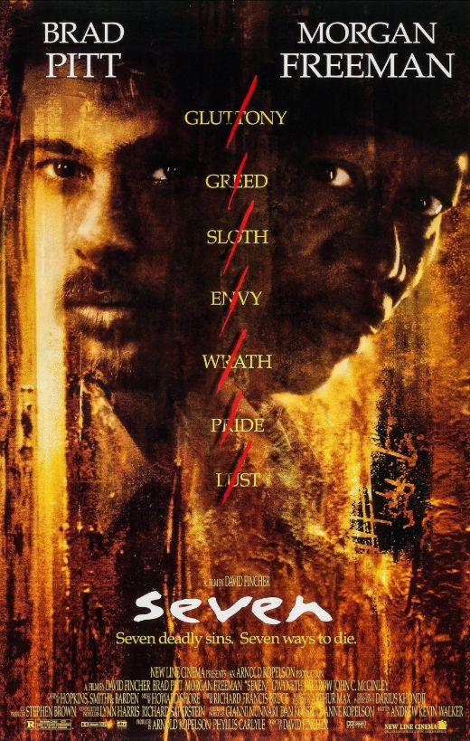

Psixoloji dram və kult klassiki. Brad Pitt, Tyler Durden rolu ilə ikonik performans sərgiləyib.
Quentin Tarantino’nun şedevri. Pitt, Cliff Booth rolu ilə Oskar qazanıb.

David Fincher ilə psixoloji triller. Pitt, detektiv rolu ilə diqqət çəkib.
Epik tarixi film. Pitt, Achilles rolu ilə yadda qalıb.